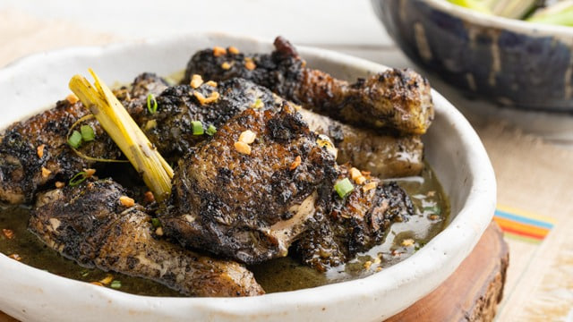

Mindanao
Chicken Piyanggang
Also hailing from the Tausug people of Sulu, Chicken Piyanggang is a distinctive chicken dish that shares the same foundational ingredient as Tiyula Itum: the burnt coconut paste (pamapa itum). However, instead of a soup, Piyanggang is a dry dish where the chicken is first braised in coconut milk and the black spice paste until tender, and then grilled over hot coals to impart a deep, smoky flavor.

Gather
Ingredients
- Chicken, cut into serving pieces
- Pamapa itum (burnt coconut paste mixed with garlic, ginger, turmeric, and chilies)
- Coconut milk (gata)
- Lemongrass, pounded
- Onions, chopped
- Salt and pepper
- Cooking oil
Make it
Recipe
- Prepare the pamapa itum by roasting grated coconut until black and pounding it with the spices (garlic, ginger, turmeric, chilies).
- Rub the chicken pieces generously with half of the pamapa itum paste and marinate for at least an hour.
- In a wide pan or wok, sauté the chopped onions, then add the marinated chicken. Cook until the outside of the chicken changes color.
- Pour in the coconut milk and add the pounded lemongrass. Stir in the remaining pamapa itum.
- Simmer over low-medium heat until the chicken is cooked through and the coconut milk has reduced to a thick, oily, dark sauce that coats the meat.
- Remove the chicken pieces from the pan.
- Grill the chicken over hot coals just until slightly charred and smoky, basting it with the remaining thick sauce from the pan.
- Serve immediately with rice, spooning any leftover sauce over it.